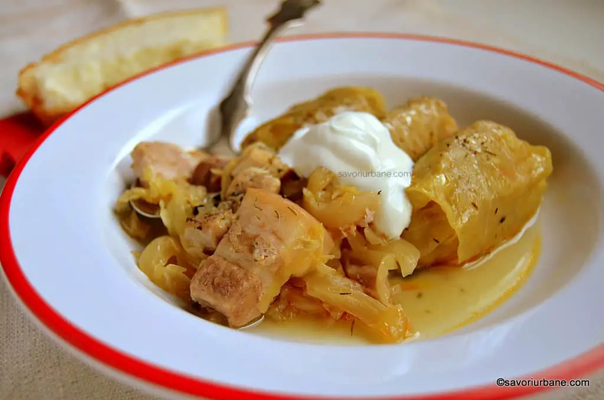

Sarmale

Description
These traditional sarmals are not missing from Romanians' Holiday tables. Sarmals are made for Christmas, New Year, the celebration of different saints and even Easter (in some areas). The most beloved Romanian sarmăluțe are the ones with minced pork (or pork-beef mix), wrapped in thin sheets of sauerkraut.
Traditional Moldavian sarmales are made very small, they contain chopped greens (dill, green parsley) and are boiled with broth or tomato juice. They are served with warm polenta.
Ingredients
- 500 g minced pork-beef mixture
- 1 medium onion
- 50 g raw rice
- 400 g canned tomatoes(or in broth)
- a good handful of dill and green parsley
- 1 grated teaspoon of salt
- 1/2 teaspoon of freshly ground black pepper
- 1.5 kg of pickled cabbage (with fine, thin leaves)
- 2 good spoons of lard
- 1 small box of concentrated tomato paste
- dried thyme springs
- 200 g smoked meat (ribs, bacon)
- 1 cup of borscht for extra sourness (optional)
Steps:
- Unfold the head of the sauerkraut into sheets and place them in a colander
- Rinse them briefly under cold water and let the drain
- Prepare the minced meat mixture. It is good if it is fatter because fat makes the sausages soft and fluffy
- Chop the onion finely. Chop the dill leaves and green parsley
- Add them all over the minced meat in the bowl
- Wash the raw rice and add it too. Season it with salt and pepper
- Add gradually the crushed tomatoes from the can and mix them well
- If you open 400 g can of tomatoes put half in the meat and the rest in the sauce
- Pickled cabbage is good to have large and thin leaves
- Cut the spine with the knife. took out 4 of the big sheets, 3 or 2 of the smaller ones. I placed them neatly in stacks. I got 80 such rectangles
- Absolutely everything that falls from the seam is kept! Including the thick ribs! They will be chopped at the end and will settle at the bottom and on the surface of the pot.
- Prepare at hand the cut cabbage leaves, the bowl with the meat, a wooden (or plastic) bottom, a teaspoon and a well-sharpened small knife.
- On each rectangle I put 1 teaspoon of the composition (approx. 11 g). I wrapped the mini wire and then stuffed the ends. It's a painstaking job because we risk breaking the casing if we push the ends too hard.
- And so on until you finish the hole composition